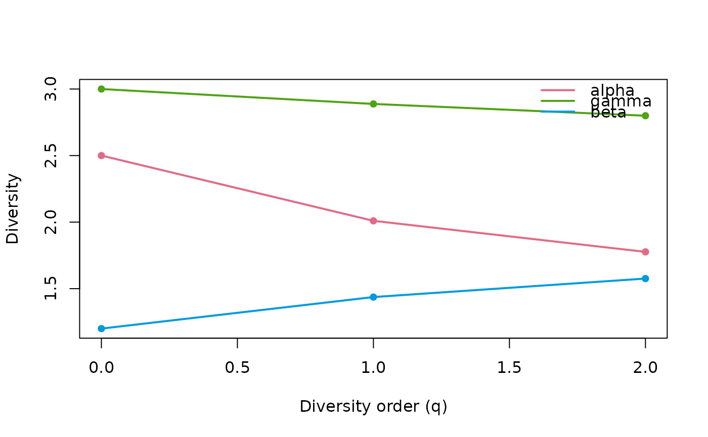

Partition neutral, phylogenetic or functional Hill-number diversity into
alpha, gamma and beta components across a set of samples. With a hierarchy
formula it instead performs multi-scale (nested) partitioning, returning
one beta per hierarchical level.
Arguments
- data
A count table (taxa x samples) or a supported object; a single sample is not meaningful for partitioning.
- q
Numeric vector of diversity orders (>= 0). Defaults to
c(0, 1, 2)(richness, Shannon, Simpson).- tree
A phylogenetic tree of class
phylowhose tip labels match the taxa indata.- dist
A functional distance matrix (or
dist) over the taxa.- tau
Optional functional distance threshold. Defaults to
max(dist).- hierarchy
Optional one-sided nesting formula, coarsest to finest, e.g.
~ region / site, requesting multi-scale (nested) partitioning instead of the default single-level partition. One beta is returned per hierarchical transition and the chain telescopes exactly:gamma = alpha_finest * prod(beta). Works for all three diversity types (neutral, phylogenetic, functional); see the partitioning vignette for the shared construction and its assumptions (equal per-sample weighting; one shared tree depth /tauacross scales). Grouping variables are resolved againstmetadatawhen supplied, otherwise against the calling environment.- metadata
Optional per-sample
data.framesupplying the variables named inhierarchy; rows are matched to the count-table columns by name when possible, otherwise by position.- type
Diversity type:
"auto"(default) infers it from the inputs (counts only -> neutral,+tree-> phylogenetic,+dist-> functional); an explicit"neutral","phylogenetic"or"functional"asserts the type and is validated against the inputs (e.g."phylogenetic"requires atree;"neutral"ignores any tree/dist carried by the object).- out
Output shape:
"tibble"(default) returns a long-formatdata.framewith columnsq,component,value;"matrix"returns the legacy matrix (orders in rows,alpha/gamma/betain columns). Withhierarchy,"tibble"returns one row per(q, scale)and"matrix"returnsalpha, onebeta_<level>per nesting level, andgamma.
Value
A long-format data.frame of class hill_partition (default) with a
plot() method, or a matrix with columns alpha, gamma, beta and
diversity orders in rows when out = "matrix". With hierarchy, a
hill_hierarchy long-format data.frame (with its own plot() method) or
the corresponding wide matrix.
Examples
counts <- matrix(c(10, 0, 5, 2, 8, 1), nrow = 3,
dimnames = list(c("t1", "t2", "t3"), c("s1", "s2")))
hillpart(counts)
#> Partitioning neutral Hill numbers of "q0", "q1", and "q2".
#> <hilldiv3 result: neutral>
#> 9 rows x 3 cols
#>
#> q component value
#> 1 0 alpha 2.500000
#> 2 1 alpha 2.009791
#> 3 2 alpha 1.776509
#> 4 0 gamma 3.000000
#> 5 1 gamma 2.887919
#> 6 2 gamma 2.799486
#> 7 0 beta 1.200000
#> 8 1 beta 1.436925
#> 9 2 beta 1.575835
plot(hillpart(counts))
#> Partitioning neutral Hill numbers of "q0", "q1", and "q2".

# Multi-scale partitioning across a nested design.
set.seed(1)
tab <- matrix(rpois(12 * 8, 5), nrow = 12,
dimnames = list(paste0("t", 1:12), paste0("s", 1:8)))
md <- data.frame(region = rep(c("N", "S"), each = 4),
site = rep(c("a", "b", "c", "d"), each = 2),
row.names = paste0("s", 1:8))
hillpart(tab, hierarchy = ~ region / site, metadata = md)
#> Partitioning neutral Hill numbers across scales "sample < site < region <
#> total".
#> <hilldiv3 result: neutral>
#> 12 rows x 5 cols
#>
#> q scale n_units diversity beta
#> 1 0 sample 8 12.00000 NA
#> 2 0 site 4 12.00000 1.000000
#> 3 0 region 2 12.00000 1.000000
#> 4 0 total 1 12.00000 1.000000
#> 5 1 sample 8 11.11495 NA
#> 6 1 site 4 11.60076 1.043708
#> 7 1 region 2 11.77266 1.014817
#> 8 1 total 1 11.95901 1.015829
#> 9 2 sample 8 10.47242 NA
#> 10 2 site 4 11.24852 1.074109
#> 11 2 region 2 11.56260 1.027923
#> 12 2 total 1 11.92231 1.031110